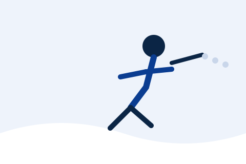

Гонка и стрельба
Спортсмен проходит дистанцию на лыжах и поражает мишени на огневых рубежах.
Биатлон — зимний вид спорта, сочетающий лыжные гонки и стрельбу из винтовки. Узнайте правила, звёзд сезона, расписание гонок и ключевые термины.
Изучить правила
Спортсмен проходит дистанцию на лыжах и поражает мишени на огневых рубежах.
В зависимости от дисциплины промах даёт штрафной круг или дополнительный патрон.
Спринт, преследование, индивидуальная гонка, масс-старт и эстафеты.
Спортсмены, на которых стоит обратить внимание в этом сезоне.
Лидер сборной по скорости стрельбы, трёхкратная победительница этапов Кубка мира.

Стабильная стрельба стоя и высокая выносливость на длинных дистанциях.
Универсал: уверенно работает на финишных кругах и в эстафетных этапах.
Ближайшие этапы сезона (пример расписания).
| Дата | Место | Дисциплина | Время |
|---|---|---|---|
| 10 января | Оберхоф | Спринт | 14:30 |
| 12 января | Оберхоф | Преследование | 13:00 |
| 18 января | Рупольдинг | Индивидуальная гонка | 12:15 |
| 25 января | Антхольц | Масс-старт | 15:00 |